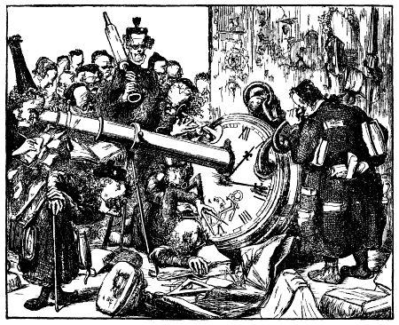
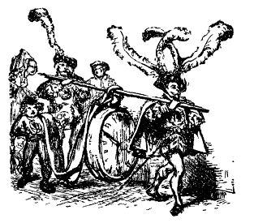
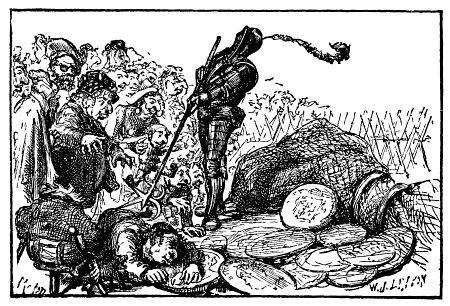

Ngài ra lệnh cho hai người lính cận vệ khỏe nhất luồn đồng hồ vào một cái gậy, khiêng lên vai như thể những người đánh xe ngựa ở bên Anh khiêng một thùng bia vậy. Ngài ngạc nhiên thấy tiếng phát ra từ cái máy cứ đều đều liên tục, và chiếc kim chỉ phút cứ quay, bởi vì con mắt của người tí hon tinh hơn mắt của chúng ta nhiều. Ngài hỏi các nhà bác học, ý kiến của họ rất khác nhau và khá xa sự thật, như bạn đọc có thể dự đoán được. Nhưng nói thật, tôi không hiểu được họ nhiều lắm. Tiếp đó, tôi đưa những đồng tiền bạc và đồng, cái ví tiền, chín đồng tiền to bằng vàng và vài đồng tiền nhỏ hơn, con dao và dao cạo, cái lược và hộp thuốc lá, khăn mùi soa và sổ nhật ký. Người ta chất kiếm, súng lục, túi thuốc súng và đạn lên xe, chở về kho vũ khí của nhà vua, còn những thứ khác thì trả lại cho tôi.

Như tôi đã nói, tôi giấu không cho lục soát một cái túi. Túi này dựng một cặp kính (mắt tôi kém, đôi khi phải dùng kính), một cái ống nhòm và vài ba thứ cần thiết, không ích lợi gì cho nhà vua. Vì vậy tôi thấy không đưa ra cũng chẳng phạm đến danh dự: và tôi sợ người ta làm hỏng hay đánh mất nếu tôi không giữ nó trong mình.